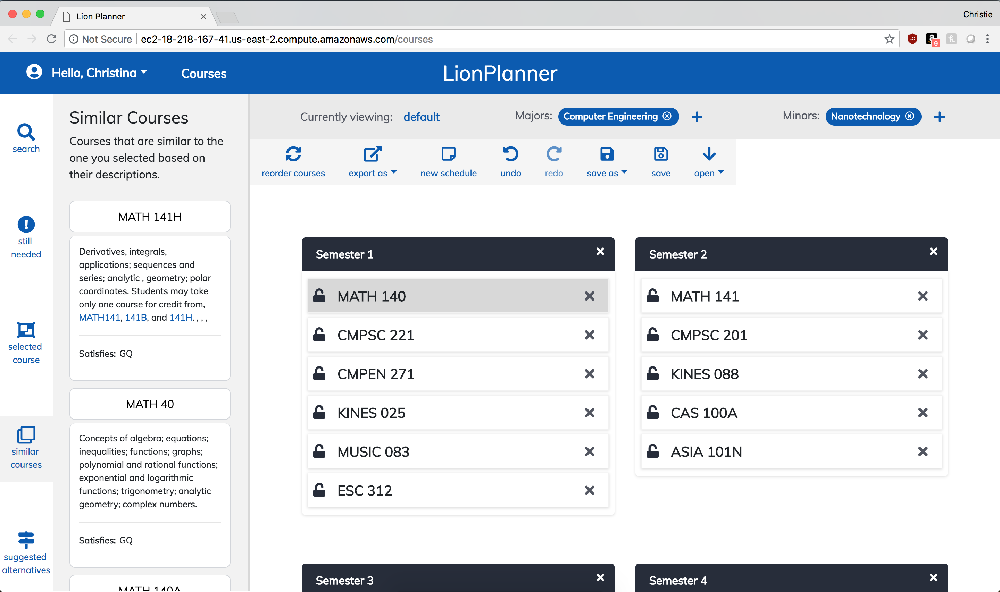
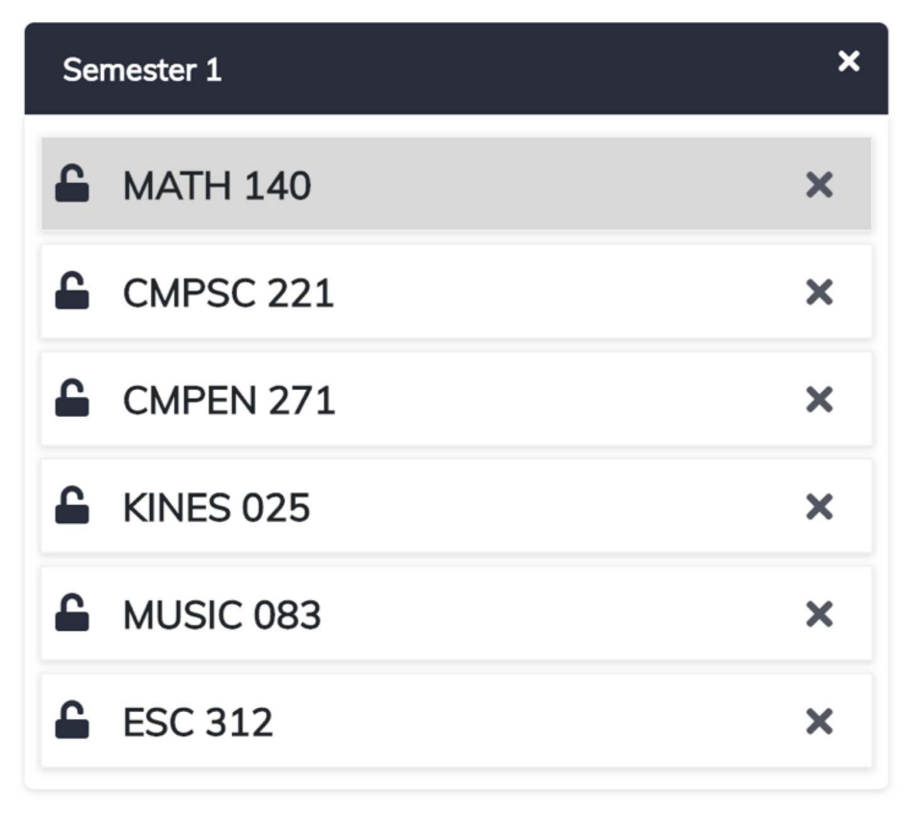
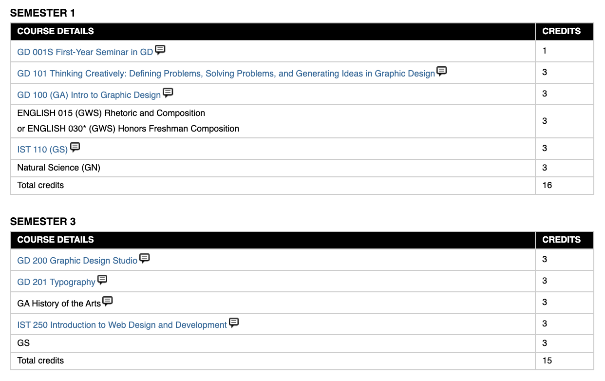
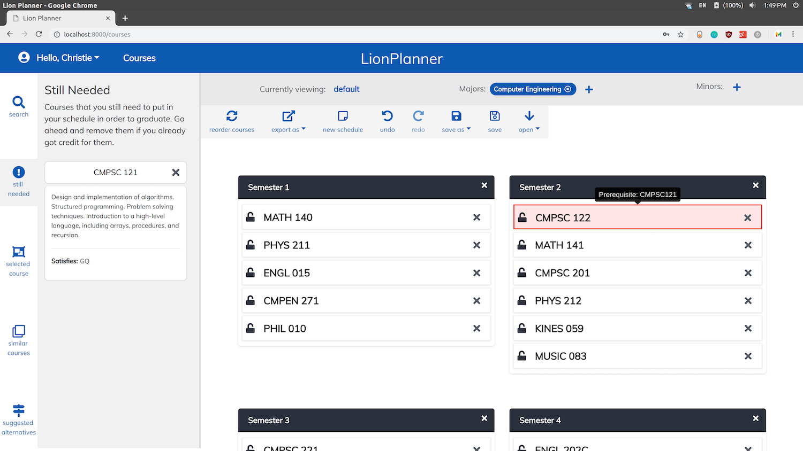
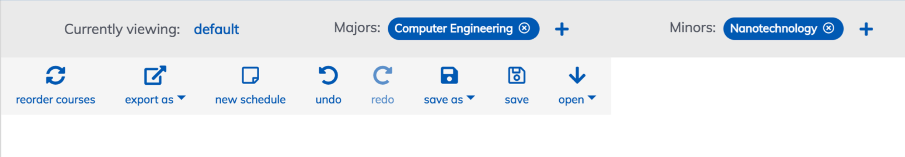
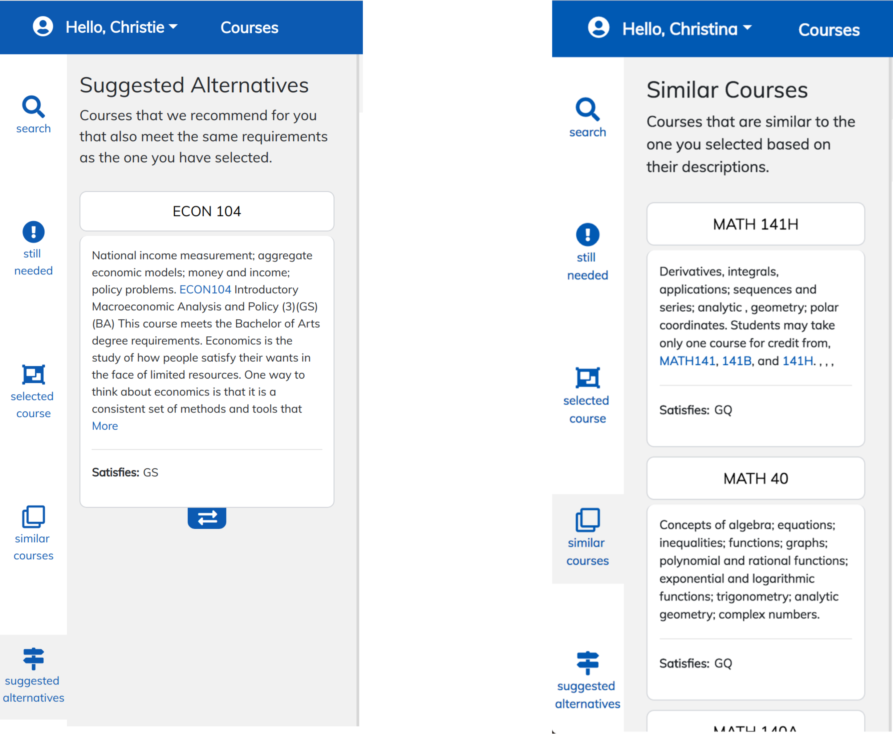
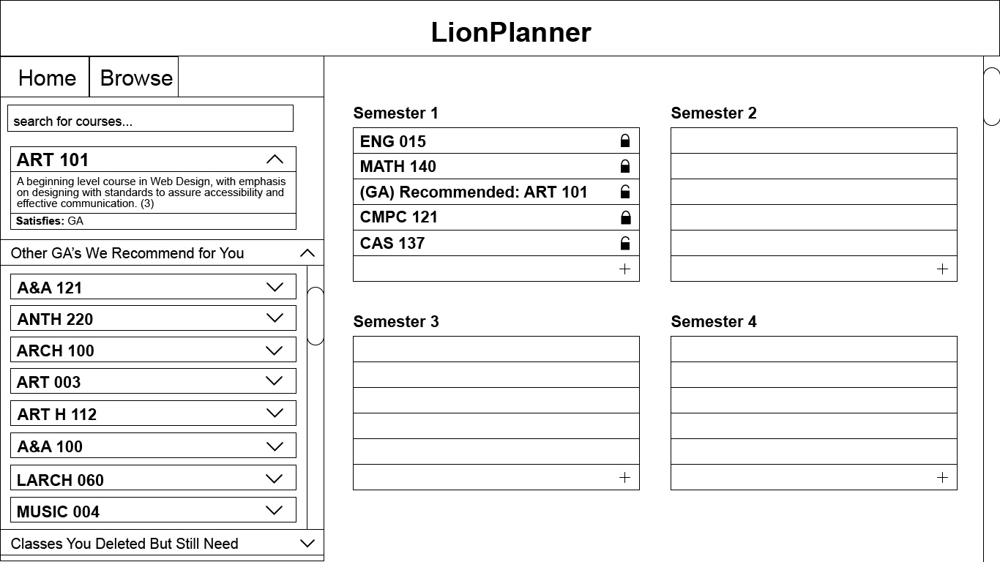
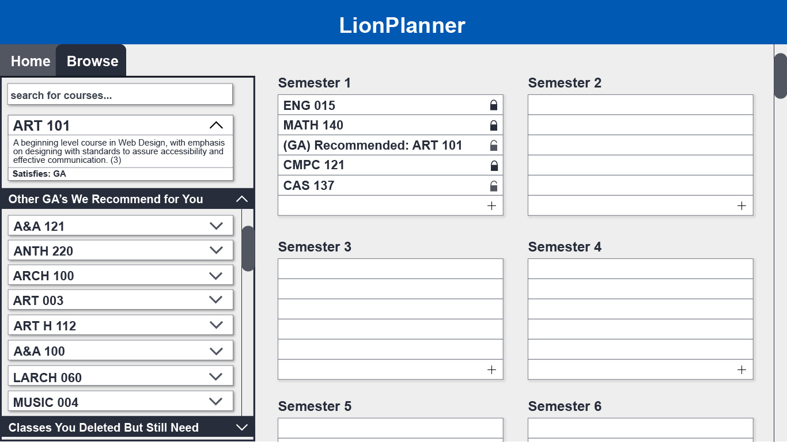
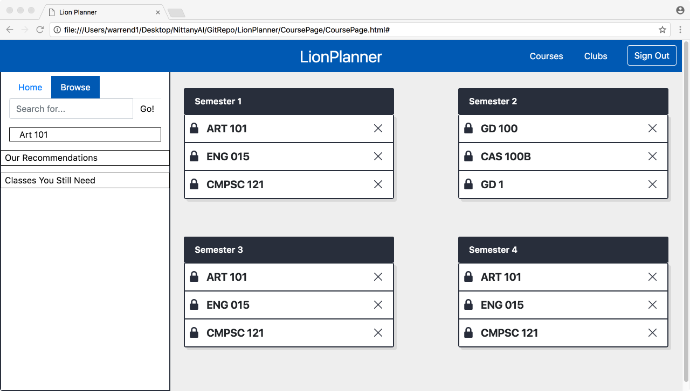

LionPlanner
A web app that generates modifiable 4-year academic plans to make planning
college courses less intimidating and less tedious for students.
UI/Visual
UX
Sketch
HTML & CSS
Pitch Delivery
Bootstrap

Context: The NittanyAI Challenge
The Challenge: Build an application that uses AI to solve a problem in education.
9 month challenge
Initial 70+ teams
10 teams selected to build prototypes
5 teams selected to build MVPs
Team
Christie (me):
UI/UX Designer, Communications & Presentations
Matt:
Full Stack Dev
Mike:
Front End Dev
Dylan, Ben, Quinn:
Back End Devs
Outcome
Our team was awarded 1st Place in the Challenge, and received a total of $37,500 in funding.
PROBLEM STATEMENT
Planning which courses to take over a college career at Penn State is a tedious and entirely manual process that requires students to seek information from multiple scattered resources.
Manual planning process.
Students planning more than one semester ahead have to resort to using a spreadsheet or pen and paper to organize their plans, making this process unnecessarily time consuming.
Scattered resources.
The course catalog, major handbooks, recommended plans, etc. are all in different places, and carry information that, if missed, could lead to issues down the road.
Difficult to Explore Options
Manually testing different classes, majors, and minors is very complicated, and many students avoid planning entirely, leaving Penn State with the bare minimum.
Users
In Depth Planner
This student wants to explore all of their options and tailor their degree to their specific interests. They usually plan using a Google Sheet, but find it frustrating to test different scenarios for their degree. This student also particularly likes branching out of the required courses for their major(s), and wants to get more out of their time in college.
Needs
Degree Seeker
This student wants to make sure they will graduate on time with all the requirements for their degree. They don't want to take many extra classes, but would like to easily explore different electives to take within their major. This student would rather not spend too much time in their advisor's office, but does want their advisor to approve their plan.
Needs
Goals
Automate Initial Plan
Generate an initial plan based on a student's major that takes into account any previous course history.
Prevent Missed Courses
Automatically fulfill all degree requirements, and alert when students are missing prerequisites.
Provide Easy Customization
Allow major, minor, and course exploration, and suggest similar courses to ones in the plan.
Features
Search Courses
Students can search the entire course catalog and view the descriptions of any course, consolidating resources, and allowing the In Depth Planner to discover courses outside their major.


Semester Design
Semesters take visual inspiration from the recommended plans for students' majors to increase familiarity in the design and decrease the learning curve of LionPlanner.
Still Needed
If a student deletes a required course, it will be added to Still Needed as a reminder, which is especially useful for the Degree Seeker to fulfill their degree requirements.
Prerequisite Warnings
Any course that does not have necessary prerequisites before it is highlighted in red with a tooltip of the missing prereq. This keeps the Degree Seeker on track to take all courses on time.

Toolbar
The plan will automatically update with changes in majors and minors, and students can create, save, and export new plans, giving the In Depth Planner a space to test many scenarios.

Similar Courses
If a student deletes a required course, it will be added to Still Needed as a reminder, which is especially useful for the Degree Seeker to fulfill their degree requirements.
Suggested Alternatives
Shows other courses that meet the same requirements as the one selected can can be swapped out, allowing the Degree Seeker to explore options within their major.

Process & progression
My visual design skills grew significantly during this project, as it was my first major experience with interface design. Below are my designs from wireframe to final prototype, with medium/hi-fi's between. During this process I grew more accustomed to the standards of interface design, and how to best use (and not use) screen space. My sense of web typography and color palettes also improved, as I learned to apply my graphic design knowledge to a new medium.



Conclusion
Summary
When I'm asked at what point I became sure that I wanted to do UI/UX design, I always point to LionPlanner. Not only was this project impactful because of its scale and how much I learned, but it also showed me the potential design & tech have to help people. I truly loved helping solve a real issue and hearing people say how much it would have changed their experience.
Next Time...
The major challenges our team faced during this project were with communication among a large team of college students. If we were to do the project over again, I would make sure to establish clear roles on our team, including how much each member would like to contribute. Navigating conflicts that arose was absolutely a learning experience that changed the way I now approach collaboration.